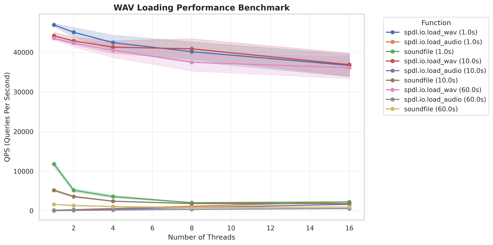

Benchmark wav¶
This example measuers the performance of loading WAV audio.
It compares three different approaches for loading WAV files:
spdl.io.load_wav(): Fast native WAV parser optimized for simple PCM formatsspdl.io.load_audio(): General-purpose audio loader using FFmpeg backendsoundfile(libsndfile): Popular third-party audio I/O library
The benchmark suite evaluates performance across multiple dimensions:
Various audio configurations (sample rates, channels, bit depths, durations)
Different thread counts (1, 2, 4, 8, 16) to measure parallel scaling
Statistical analysis with 95% confidence intervals using Student’s t-distribution
Queries per second (QPS) as the primary performance metric
Example
$ python benchmark_wav.py --plot --output results.png
Result
The following plot shows the QPS (measured by the number of files processed) of each functions with different audio durations.
The spdl.io.load_wav() is a lot faster than the others, because all it
does is reinterpret the input byte string as array.
It shows the same performance for audio with longer duration.
And since parsing WAV is instant, the spdl.io.load_wav function spends more time on creation of NumPy Array. It needs to acquire the GIL, thus the performance does not scale in multi-threading. (This performance pattern of this function is pretty same as the spdl.io.load_npz.)
The following is the same plot without load_wav.
libsoundfile has to process data iteratively (using io.BytesIO) because
it does not support directly loading from byte string, so it takes longer to process
longer audio data.
The performance trend (single thread being the fastest) suggests that
it does not release the GIL majority of the time.
The spdl.io.load_audio() function (the generic FFmpeg-based implementation) does
a lot of work so its overall performance is not as good,
but it scales in multi-threading as it releases the GIL almost entirely.
Source¶
Source
Click here to see the source.
1# Copyright (c) Meta Platforms, Inc. and affiliates.
2# All rights reserved.
3#
4# This source code is licensed under the BSD-style license found in the
5# LICENSE file in the root directory of this source tree.
6
7# pyre-strict
8
9"""This example measuers the performance of loading WAV audio.
10
11It compares three different approaches for loading WAV files:
12
13- :py:func:`spdl.io.load_wav`: Fast native WAV parser optimized for simple PCM formats
14- :py:func:`spdl.io.load_audio`: General-purpose audio loader using FFmpeg backend
15- ``soundfile`` (``libsndfile``): Popular third-party audio I/O library
16
17The benchmark suite evaluates performance across multiple dimensions:
18
19- Various audio configurations (sample rates, channels, bit depths, durations)
20- Different thread counts (1, 2, 4, 8, 16) to measure parallel scaling
21- Statistical analysis with 95% confidence intervals using Student's t-distribution
22- Queries per second (QPS) as the primary performance metric
23
24**Example**
25
26.. code-block:: shell
27
28 $ python benchmark_wav.py --plot --output results.png
29
30**Result**
31
32The following plot shows the QPS (measured by the number of files processed) of each
33functions with different audio durations.
34
35.. image:: ../../_static/data/example-benchmark-wav.webp
36
37
38The :py:func:`spdl.io.load_wav` is a lot faster than the others, because all it
39does is reinterpret the input byte string as array.
40It shows the same performance for audio with longer duration.
41
42And since parsing WAV is instant, the spdl.io.load_wav function spends more time on
43creation of NumPy Array.
44It needs to acquire the GIL, thus the performance does not scale in multi-threading.
45(This performance pattern of this function is pretty same as the
46:ref:`spdl.io.load_npz <data-format>`.)
47
48The following is the same plot without ``load_wav``.
49
50.. image:: ../../_static/data/example-benchmark-wav-2.webp
51
52``libsoundfile`` has to process data iteratively (using ``io.BytesIO``) because
53it does not support directly loading from byte string, so it takes longer to process
54longer audio data.
55The performance trend (single thread being the fastest) suggests that
56it does not release the GIL majority of the time.
57
58The :py:func:`spdl.io.load_audio` function (the generic FFmpeg-based implementation) does
59a lot of work so its overall performance is not as good,
60but it scales in multi-threading as it releases the GIL almost entirely.
61"""
62
63__all__ = [
64 "BenchmarkResult",
65 "BenchmarkConfig",
66 "create_wav_data",
67 "load_sf",
68 "load_spdl_audio",
69 "load_spdl_wav",
70 "benchmark",
71 "run_benchmark_suite",
72 "plot_benchmark_results",
73 "main",
74]
75
76import argparse
77import io
78import os.path
79import time
80from collections.abc import Callable
81from concurrent.futures import as_completed, ThreadPoolExecutor
82from dataclasses import dataclass
83
84import numpy as np
85import scipy.io.wavfile
86import scipy.stats
87import soundfile as sf
88import spdl.io
89from numpy.typing import NDArray
90
91
92def create_wav_data(
93 sample_rate: int = 44100,
94 num_channels: int = 2,
95 bits_per_sample: int = 16,
96 duration_seconds: float = 1.0,
97) -> tuple[bytes, NDArray]:
98 """Create a WAV file in memory for benchmarking.
99
100 Args:
101 sample_rate: Sample rate in Hz
102 num_channels: Number of audio channels
103 bits_per_sample: Bits per sample (16 or 32)
104 duration_seconds: Duration of audio in seconds
105
106 Returns:
107 Tuple of (WAV file as bytes, audio samples array)
108 """
109 num_samples = int(sample_rate * duration_seconds)
110
111 dtype_map = {
112 16: np.int16,
113 32: np.int32,
114 }
115 dtype = dtype_map[bits_per_sample]
116 max_amplitude = 32767 if bits_per_sample == 16 else 2147483647
117
118 t = np.linspace(0, duration_seconds, num_samples)
119 frequencies = 440.0 + np.arange(num_channels) * 110.0
120 sine_waves = np.sin(2 * np.pi * frequencies[:, np.newaxis] * t)
121 samples = (sine_waves.T * max_amplitude).astype(dtype)
122
123 wav_buffer = io.BytesIO()
124 scipy.io.wavfile.write(wav_buffer, sample_rate, samples)
125 wav_data = wav_buffer.getvalue()
126
127 return wav_data, samples
128
129
130def load_sf(wav_data: bytes) -> NDArray:
131 """Load WAV data using soundfile library.
132
133 Args:
134 wav_data: WAV file data as bytes
135
136 Returns:
137 Audio samples array as int16 numpy array
138 """
139 audio_file = io.BytesIO(wav_data)
140 data, _ = sf.read(audio_file, dtype="int16")
141 return data
142
143
144def load_spdl_audio(wav_data: bytes) -> NDArray:
145 """Load WAV data using :py:func:`spdl.io.load_audio` function.
146
147 Args:
148 wav_data: WAV file data as bytes
149
150 Returns:
151 Audio samples array as numpy array
152 """
153 return spdl.io.to_numpy(spdl.io.load_audio(wav_data, filter_desc=None))
154
155
156def load_spdl_wav(wav_data: bytes) -> NDArray:
157 """Load WAV data using :py:func:`spdl.io.load_wav` function.
158
159 Args:
160 wav_data: WAV file data as bytes
161
162 Returns:
163 Audio samples array as numpy array
164 """
165 return spdl.io.to_numpy(spdl.io.load_wav(wav_data))
166
167
168@dataclass(frozen=True)
169class BenchmarkResult:
170 """Results from a single benchmark run."""
171
172 duration: float
173 qps: float
174 ci_lower: float
175 ci_upper: float
176 num_threads: int
177 function_name: str
178 duration_seconds: float
179
180
181def benchmark(
182 name: str,
183 func: Callable[[], NDArray],
184 iterations: int,
185 num_threads: int,
186 num_sets: int,
187 duration_seconds: float,
188) -> tuple[BenchmarkResult, NDArray]:
189 """Benchmark a function using multiple threads and calculate statistics.
190
191 Executes a warmup phase followed by multiple benchmark sets to compute
192 performance metrics including mean queries per second (QPS) and 95%
193 confidence intervals using Student's t-distribution.
194
195 Args:
196 name: Descriptive name for the benchmark (used in results)
197 func: Callable function to benchmark (takes no args, returns NDArray)
198 iterations: Total number of function calls per benchmark set
199 num_threads: Number of concurrent threads for parallel execution
200 num_sets: Number of independent benchmark sets for confidence interval
201 duration_seconds: Duration of audio file being processed (for metadata)
202
203 Returns:
204 Tuple containing:
205 - BenchmarkResult with timing statistics, QPS, confidence intervals
206 - Output NDArray from the last function execution
207 """
208
209 with ThreadPoolExecutor(max_workers=num_threads) as executor:
210 # Warmup
211 futures = [executor.submit(func) for _ in range(num_threads * 30)]
212 for future in as_completed(futures):
213 output = future.result()
214
215 # Run multiple sets for confidence interval
216 qps_samples = []
217 for _ in range(num_sets):
218 t0 = time.perf_counter()
219 futures = [executor.submit(func) for _ in range(iterations)]
220 for future in as_completed(futures):
221 output = future.result()
222 elapsed = time.perf_counter() - t0
223 qps_samples.append(iterations / elapsed)
224
225 # Calculate mean and 95% confidence interval
226 qps_mean = np.mean(qps_samples)
227 qps_std = np.std(qps_samples, ddof=1)
228 confidence_level = 0.95
229 degrees_freedom = num_sets - 1
230 confidence_interval = scipy.stats.t.interval(
231 confidence_level,
232 degrees_freedom,
233 loc=qps_mean,
234 scale=qps_std / np.sqrt(num_sets),
235 )
236
237 duration = 1.0 / qps_mean
238 result = BenchmarkResult(
239 duration=duration,
240 qps=qps_mean,
241 ci_lower=float(confidence_interval[0]),
242 ci_upper=float(confidence_interval[1]),
243 num_threads=num_threads,
244 function_name=name,
245 duration_seconds=duration_seconds,
246 )
247 return result, output # pyre-ignore[61]
248
249
250def run_benchmark_suite(
251 wav_data: bytes,
252 ref: NDArray,
253 num_threads: int,
254 duration_seconds: float,
255) -> tuple[BenchmarkResult, BenchmarkResult, BenchmarkResult]:
256 """Run benchmarks for both libraries with given parameters.
257
258 Args:
259 wav_data: WAV file data as bytes
260 ref: Reference audio array for validation
261 num_threads: Number of threads (use 1 for single-threaded)
262 duration_seconds: Duration of audio in seconds
263
264 Returns:
265 Tuple of (spdl_wav_result, spdl_audio_result, soundfile_result)
266 """
267 # load_wav is fast but the performance is unstable, so we need to run more
268 iterations = 100 * num_threads
269 num_sets = 100
270
271 spdl_wav_result, output = benchmark(
272 name="spdl.io.load_wav",
273 func=lambda: load_spdl_wav(wav_data),
274 iterations=iterations,
275 num_threads=num_threads,
276 num_sets=num_sets,
277 duration_seconds=duration_seconds,
278 )
279 np.testing.assert_array_equal(output, ref)
280
281 # others are slow but the performance is stable.
282 iterations = 10 * num_threads
283 num_sets = 5
284
285 spdl_audio_result, output = benchmark(
286 name="spdl.io.load_audio",
287 func=lambda: load_spdl_audio(wav_data),
288 iterations=iterations,
289 num_threads=num_threads,
290 num_sets=num_sets,
291 duration_seconds=duration_seconds,
292 )
293 np.testing.assert_array_equal(output, ref)
294 soundfile_result, output = benchmark(
295 name="soundfile",
296 func=lambda: load_sf(wav_data),
297 iterations=iterations,
298 num_threads=num_threads,
299 num_sets=num_sets,
300 duration_seconds=duration_seconds,
301 )
302 if output.ndim == 1:
303 output = output[:, None]
304 np.testing.assert_array_equal(output, ref)
305
306 return spdl_wav_result, spdl_audio_result, soundfile_result
307
308
309@dataclass(frozen=True)
310class BenchmarkConfig:
311 """Configuration for audio file parameters used in benchmarking.
312
313 Attributes:
314 sample_rate: Audio sample rate in Hz (e.g., 44100 for CD quality)
315 num_channels: Number of audio channels (1=mono, 2=stereo, etc.)
316 bits_per_sample: Bit depth per sample (16 or 32)
317 duration_seconds: Duration of the audio file in seconds
318 """
319
320 sample_rate: int
321 num_channels: int
322 bits_per_sample: int
323 duration_seconds: float
324
325
326def plot_benchmark_results(
327 results: list[BenchmarkResult], output_file: str = "benchmark_results.png"
328) -> None:
329 """Plot benchmark results and save to file.
330
331 Args:
332 results: List of BenchmarkResult objects containing benchmark data
333 output_file: Output file path for the saved plot
334 """
335 import matplotlib
336 import matplotlib.pyplot as plt
337 import pandas as pd
338 import seaborn as sns
339
340 matplotlib.use("Agg") # Use non-interactive backend
341
342 data = [
343 {
344 "num_threads": r.num_threads,
345 "qps": r.qps,
346 "ci_lower": r.ci_lower,
347 "ci_upper": r.ci_upper,
348 "function": r.function_name,
349 "duration": f"{r.duration_seconds}s",
350 }
351 for r in results
352 ]
353 df = pd.DataFrame(data)
354
355 sns.set_theme(style="whitegrid")
356 _, ax = plt.subplots(figsize=(12, 6))
357 df["label"] = df["function"] + " (" + df["duration"] + ")"
358 for label in df["label"].unique():
359 subset = df[df["label"] == label].sort_values("num_threads")
360 line = ax.plot(
361 subset["num_threads"],
362 subset["qps"],
363 marker="o",
364 label=label,
365 linewidth=2,
366 )
367
368 # Add confidence interval as shaded region
369 ax.fill_between(
370 subset["num_threads"],
371 subset["ci_lower"],
372 subset["ci_upper"],
373 alpha=0.2,
374 color=line[0].get_color(),
375 )
376
377 ax.set_xlabel("Number of Threads", fontsize=12)
378 ax.set_ylabel("QPS (Queries Per Second)", fontsize=12)
379 ax.set_title("WAV Loading Performance Benchmark", fontsize=14, fontweight="bold")
380 ax.legend(title="Function", bbox_to_anchor=(1.05, 1), loc="upper left")
381 ax.grid(True, alpha=0.3)
382
383 plt.tight_layout()
384 plt.savefig(output_file, dpi=300, bbox_inches="tight")
385 print(f"Plot saved to {output_file}")
386
387
388def _parse_args() -> argparse.Namespace:
389 """Parse command line arguments for the benchmark script.
390
391 Returns:
392 Parsed command line arguments
393 """
394 parser = argparse.ArgumentParser(description="Benchmark WAV loading performance")
395 parser.add_argument(
396 "--plot",
397 action="store_true",
398 help="Generate and save a plot of the benchmark results",
399 )
400 parser.add_argument(
401 "--output",
402 type=str,
403 default="benchmark_results.png",
404 help="Output file path for the plot (default: benchmark_results.png)",
405 )
406 return parser.parse_args()
407
408
409def _suffix(path: str) -> str:
410 p1, p2 = os.path.splitext(path)
411 return f"{p1}_2{p2}"
412
413
414def main() -> None:
415 """Run comprehensive benchmark suite for WAV loading performance.
416
417 Benchmarks multiple configurations of audio files with different durations,
418 comparing spdl.io.load_wav, spdl.io.load_audio, and soundfile libraries
419 across various thread counts (1, 2, 4, 8, 16).
420 """
421 args = _parse_args()
422
423 benchmark_configs = [
424 # (sample_rate, num_channels, bits_per_sample, duration_seconds, iterations)
425 # BenchmarkConfig(8000, 1, 16, 1.0), # Low quality mono
426 # BenchmarkConfig(16000, 1, 16, 1.0), # Speech quality mono
427 # BenchmarkConfig(48000, 2, 16, 1.0), # High quality stereo
428 # BenchmarkConfig(48000, 8, 16, 1.0), # Multi-channel audio
429 BenchmarkConfig(44100, 2, 16, 1.0), # CD quality stereo
430 BenchmarkConfig(44100, 2, 16, 10.0), #
431 BenchmarkConfig(44100, 2, 16, 60.0), #
432 # (44100, 2, 24, 1.0, 100), # 24-bit audio
433 ]
434
435 results: list[BenchmarkResult] = []
436
437 for cfg in benchmark_configs:
438 print(cfg)
439 wav_data, ref = create_wav_data(
440 sample_rate=cfg.sample_rate,
441 num_channels=cfg.num_channels,
442 bits_per_sample=cfg.bits_per_sample,
443 duration_seconds=cfg.duration_seconds,
444 )
445 print(
446 f"Threads,"
447 f"SPDL WAV QPS ({cfg.duration_seconds} sec),CI Lower, CI Upper,"
448 f"SPDL Audio QPS ({cfg.duration_seconds} sec),CI Lower, CI Upper,"
449 f"soundfile QPS ({cfg.duration_seconds} sec),CI Lower, CI Upper"
450 )
451 for num_threads in [1, 2, 4, 8, 16]:
452 spdl_wav_result, spdl_audio_result, soundfile_result = run_benchmark_suite(
453 wav_data,
454 ref,
455 num_threads=num_threads,
456 duration_seconds=cfg.duration_seconds,
457 )
458 results.extend([spdl_wav_result, spdl_audio_result, soundfile_result])
459 print(
460 f"{num_threads},"
461 f"{spdl_wav_result.qps:.2f},{spdl_wav_result.ci_lower:.2f},{spdl_wav_result.ci_upper:.2f},"
462 f"{spdl_audio_result.qps:.2f},{spdl_audio_result.ci_lower:.2f},{spdl_audio_result.ci_upper:.2f},"
463 f"{soundfile_result.qps:.2f},{soundfile_result.ci_lower:.2f},{soundfile_result.ci_upper:.2f}"
464 )
465
466 if args.plot:
467 plot_benchmark_results(results, args.output)
468 k = "spdl.io.load_wav"
469 plot_benchmark_results(
470 [r for r in results if r.function_name != k],
471 _suffix(args.output),
472 )
473
474
475if __name__ == "__main__":
476 main()
Functions¶
Functions
- create_wav_data(sample_rate: int = 44100, num_channels: int = 2, bits_per_sample: int = 16, duration_seconds: float = 1.0) tuple[bytes, ndarray[tuple[Any, ...], dtype[_ScalarT]]][source]¶
Create a WAV file in memory for benchmarking.
- Parameters:
sample_rate – Sample rate in Hz
num_channels – Number of audio channels
bits_per_sample – Bits per sample (16 or 32)
duration_seconds – Duration of audio in seconds
- Returns:
Tuple of (WAV file as bytes, audio samples array)
- load_sf(wav_data: bytes) ndarray[tuple[Any, ...], dtype[_ScalarT]][source]¶
Load WAV data using soundfile library.
- Parameters:
wav_data – WAV file data as bytes
- Returns:
Audio samples array as int16 numpy array
- load_spdl_audio(wav_data: bytes) ndarray[tuple[Any, ...], dtype[_ScalarT]][source]¶
Load WAV data using
spdl.io.load_audio()function.- Parameters:
wav_data – WAV file data as bytes
- Returns:
Audio samples array as numpy array
- load_spdl_wav(wav_data: bytes) ndarray[tuple[Any, ...], dtype[_ScalarT]][source]¶
Load WAV data using
spdl.io.load_wav()function.- Parameters:
wav_data – WAV file data as bytes
- Returns:
Audio samples array as numpy array
- benchmark(name: str, func: Callable[[], ndarray[tuple[Any, ...], dtype[_ScalarT]]], iterations: int, num_threads: int, num_sets: int, duration_seconds: float) tuple[BenchmarkResult, ndarray[tuple[Any, ...], dtype[_ScalarT]]][source]¶
Benchmark a function using multiple threads and calculate statistics.
Executes a warmup phase followed by multiple benchmark sets to compute performance metrics including mean queries per second (QPS) and 95% confidence intervals using Student’s t-distribution.
- Parameters:
name – Descriptive name for the benchmark (used in results)
func – Callable function to benchmark (takes no args, returns NDArray)
iterations – Total number of function calls per benchmark set
num_threads – Number of concurrent threads for parallel execution
num_sets – Number of independent benchmark sets for confidence interval
duration_seconds – Duration of audio file being processed (for metadata)
- Returns:
BenchmarkResult with timing statistics, QPS, confidence intervals
Output NDArray from the last function execution
- Return type:
Tuple containing
- run_benchmark_suite(wav_data: bytes, ref: ndarray[tuple[Any, ...], dtype[_ScalarT]], num_threads: int, duration_seconds: float) tuple[BenchmarkResult, BenchmarkResult, BenchmarkResult][source]¶
Run benchmarks for both libraries with given parameters.
- Parameters:
wav_data – WAV file data as bytes
ref – Reference audio array for validation
num_threads – Number of threads (use 1 for single-threaded)
duration_seconds – Duration of audio in seconds
- Returns:
Tuple of (spdl_wav_result, spdl_audio_result, soundfile_result)
Classes¶
Classes
- class BenchmarkResult(duration: float, qps: float, ci_lower: float, ci_upper: float, num_threads: int, function_name: str, duration_seconds: float)[source]¶
Results from a single benchmark run.